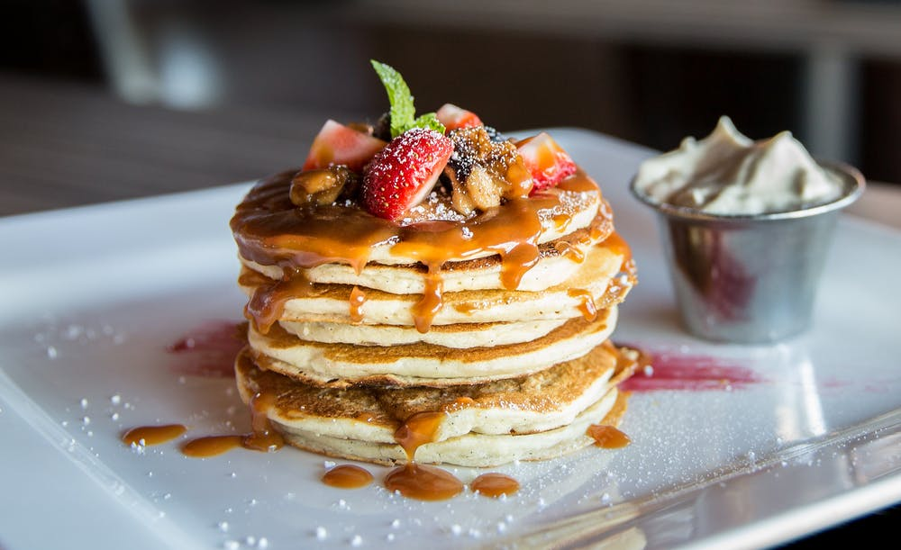

Banana Pancakes
These easy banana pancakes are soft, lightly sweet, and simple to make with pantry staples. Serve them warm for breakfast or brunch.

These easy banana pancakes are soft, lightly sweet, and simple to make with pantry staples. Serve them warm for breakfast or brunch.
step 1
Mash the ripe banana in a mixing bowl, then add the pancake mix and flaxseed.
step 2
Stir in the milk until the batter is just combined.
step 3
Cook small portions on a lightly greased skillet; flip when bubbles form and cook until golden.
1 1/2 cups dry pancake mix
1/2 cup flax seed meal
1 cup skim milk
1 ripe banana
Mixing bowl
Whisk
Skillet
Spatula
Measuring Spoons
Measuring Cups